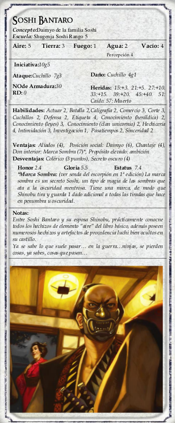

|  | Tal y como se indica en el suplemento de 1a edición La Senda del Escorpión, el patriarca de la
familia Soshi posee una Inteligencia y una Agilidad de 1, y una Consciencia y unos Reflejos de 5. Esta curiosa
combinación le convierte en un hombre pequeño, malicioso y cruel que sabe cómo embaucar y aprovecharse de su
poder pero no es consciente de la problemática de sus responsabilidades. Y tampoco aprende. Pero consiguió que sus instructores le enseñasen la forma de incrementar su Aire, el único equilibrio elemental que le interesa. Y así ha permanecido, haciendo únicamente lo necesario. Para hacerte una idea de como interpretar a Bantaro imagínate un irritante abogado infantiloide con tierras, siervos y un título nobiliario, o tal vez piensa en el personaje de Vizzini el Siciliano, de La Princesa Prometida. La apariencia de Bantaro no es mucho más agradable. Su máscara es pintura facial roja y blanca, que a lo que más recordaría a una persona de nuestra época es a un vejete delgaducho con dientes podridos que se disfrazase de Darth Maul para carnaval. Además, carece de las Habilidades de Etiqueta y de Ceremonia del Té... y el protocolo adecuado para entrevistarse con un daimio incluye ejecutar esta ceremonia con él. |